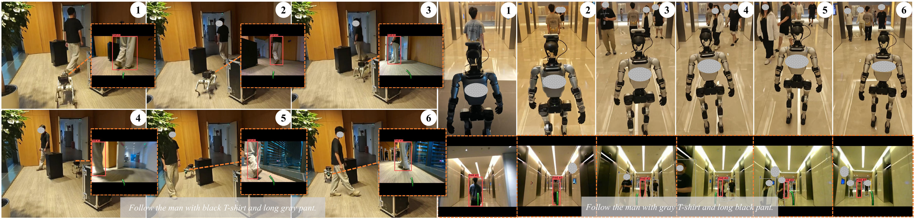

Embodied visual tracking (EVT) requires a mobile agent to continuously follow a specific target described in natural language using only onboard vision. While recent vision-language-action (VLA) policies unify target identification and trajectory planning, their chain-of-thought (CoT) reasoning often operates in abstract spatial latents that are difficult to supervise and weakly aligned with explicit image-space detections. To address this, we introduce ReferTrack, a referring-then-tracking paradigm that grounds EVT using a single forward-facing camera. Our model first selects the target from an indexed set of bounding boxes, then decodes tracking waypoints conditioned on this image-grounded decision. To preserve target motion cues over time, ReferTrack maintains a sliding-window queue of previously selected bounding boxes, injecting their geometric features into the visual history via temporal-viewpoint-bbox indicator (TVBI) tokens. We further enhance target identification by co-training on a custom Refer-QA dataset. On EVT-Bench, ReferTrack achieves state-of-the-art single-view performance with success rates of 89.4%, 73.3%, and 74.1% on the single-target, distracted, and ambiguity tracking splits, respectively—matching or even surpassing several multi-camera baselines on identification-heavy tasks. Finally, real-world deployments on legged and humanoid robots validate its robust sim-to-real transfer capabilities. Code is available at https://github.com/MedlarTea/referTrack.
We evaluate ReferTrack on EVT-Bench under the single forward-view setting, where it achieves state-of-the-art performance across single-target, distracted, and ambiguity tracking splits. Real-world deployments on a legged robot and a humanoid robot further validate robust sim-to-real transfer with a single forward-facing camera.

ReferTrack follows language-specified pedestrians in unstructured real-world scenes, remaining robust to distractors, occlusions, and dynamic motion while transferring from simulation to physical robots.
@article{ye2026refertrack,
title={ReferTrack: Referring Then Tracking for Embodied Visual Tracking},
author={Ye, Hanjing and Zeng, Tianle and Zhang, Jiazhao and Wang, Shaoan and Zhang, Zibo and Situ, Weixi and Zhou, Yuchen and Ling, Yonggen and Zhang, Hong},
journal={arXiv preprint arXiv:2607.20061},
year={2026},
url={https://arxiv.org/abs/2607.20061}
}